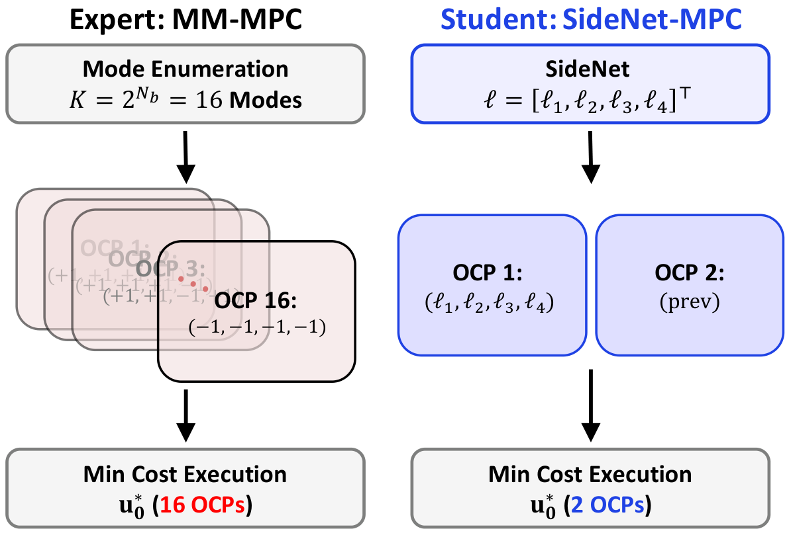
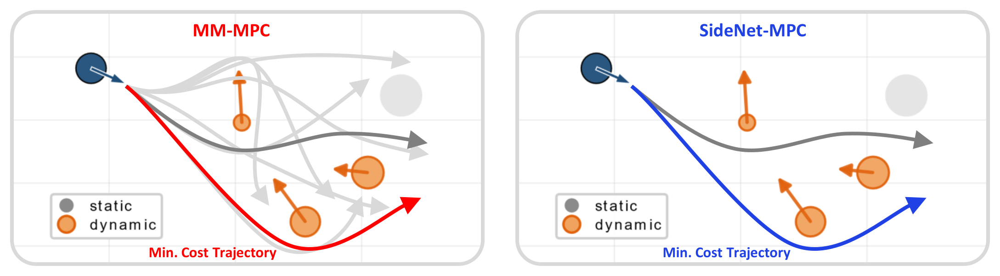
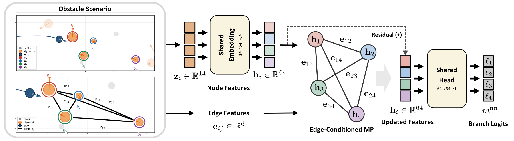
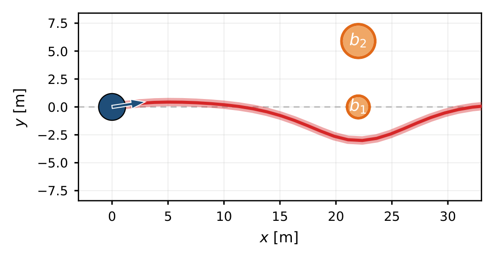
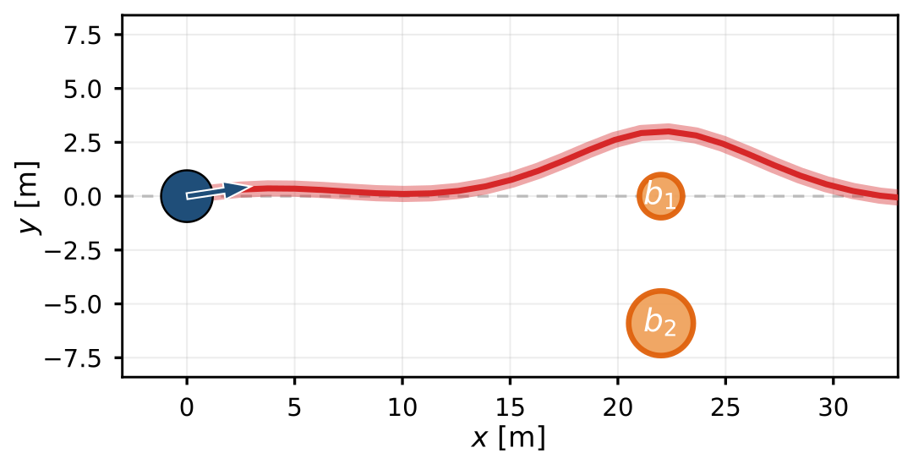
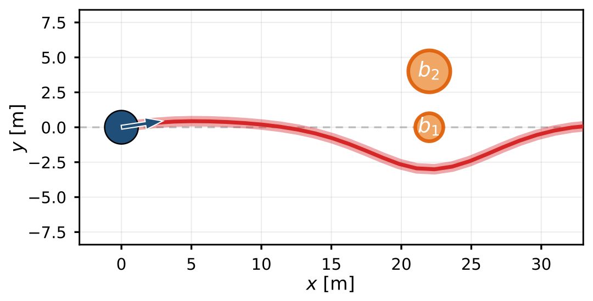
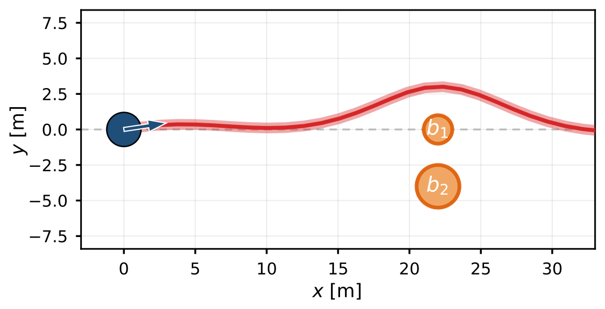

Homotopy modes
Each sign assignment fixes the left/right side of every branch obstacle and yields one TC-CBF constrained OCP; the executed mode is the measured minimum.


1Kongju National University · 2NVIDIA Research · 3KAIST
Figures and closed-loop videos from the manuscript. Captions are kept short; please refer to the paper for the method.
Multimodal TC-CBF MPC enumerates every left/right combination of the decision-critical obstacles—K = 2Nb = 16 parallel OCPs. SideNet-MPC keeps only two: the side combination proposed by a graph network, and the decision executed at the previous step. The lower measured cost is executed.


Each sign assignment fixes the left/right side of every branch obstacle and yields one TC-CBF constrained OCP; the executed mode is the measured minimum.
Teacher data and the randomized evaluations use the same 250 m × 40 m corridor. Training uses the 100-obstacle mix only; denser scenes are out of distribution.


The Nb branch slots form a complete graph. A single edge-conditioned message-passing layer carries the coupling that no per-obstacle feature can express.

Every controller in a clip sees the same traffic. Playback is accelerated. Teacher: 16 solves. SideNet-MPC: 2 solves.
Same overtaking scene, four controllers at matching times. Teacher (16 candidates) and SideNet-MPC (2) take the swerve; both bearing rules stay in the pass-through mode.
One Monte Carlo seed, three controllers. Teacher (16 candidates) and SideNet-MPC (2) thread the same traffic. An early wrong side drives the bearing rule into the wall at 56.5 s.
Clips start automatically as they scroll into view.
Same overtaking scene and one Monte Carlo seed, frozen at matching times.


A network that judges each obstacle alone cannot see whether two obstacles leave a passable gap. The GNN carries that pairwise gap on its edges.




Coupling gallery. Ego heading, speed, and b1 are identical in all four panels; only b2 moves. (a), (c): b2 on the free side of b1. (b), (d): b2 on the blocking side. Red: expert arg-min trajectory. g*: pair gap at the time the vehicle arrives. The numbers are lead-slot logits ℓb1 (positive: pass b1 on the right); the MLP value is identical by construction. ✓/✗: the sign agrees / disagrees with the expert bit of b1.
300 seeds per cell, more than 7,000 closed-loop rollouts in total. Training used the 100-obstacle setting only; 120–140 are out of distribution.

| Configuration | 100 | 120 | 130 | 140 |
|---|---|---|---|---|
| Teacher (16 solves) | 61.0 | 44.7 | 34.7 | 33.0 |
| SideNet-MPC | 46.0 (75) | 33.3 (75) | 24.7 (71) | 21.0 (64) |
| Per-obstacle net | 40.0 (66) | 30.7 (69) | 20.0 (58) | 16.7 (51) |
| Capacity control | 43.3 (71) | 31.7 (71) | 18.3 (53) | 16.3 (49) |
| Bearing, 2 cand. | 39.7 (65) | 25.0 (56) | 16.3 (47) | 9.0 (27) |
| Bearing, 1 cand. | 1.3 (2) | 0.0 (0) | 0.0 (0) | 0.0 (0) |
| Controller | OCPs | 1-core [ms] | 16-thread [ms] | Rel. CPU |
|---|---|---|---|---|
| Teacher (16 solves) | 16 | 300 | 47.5 | 1.00 |
| SideNet-MPC | 2 | 28.1 | — | 0.09 |
The other two-solve rows share the same OCP budget. SideNet-MPC is about 11× less CPU work than the sequential teacher and 1.7× lower latency than the 16-thread batch, on one core instead of sixteen.